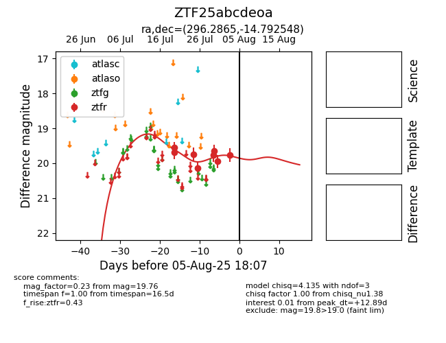

Target ZTF25abcdeoa at 2025-08-05 18:07, see:
FINK: fink-portal.org/ZTF25abcdeoa
Lasair: lasair-ztf.lsst.ac.uk/objects/ZTF25abcdeoa
ALeRCE: alerce.online/object/ZTF25abcdeoa
alt names
ZTF25abcdeoa (ztf,fink)
coordinates:
equatorial (ra, dec) = (296.2865,-14.79255)
galactic (l, b) = (25.3691,-18.43532)
photometry
last ztfr=19.76
8 ztfr detections
